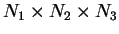

Next: Getting started
Up: Utility tetr
Previous: Installation and general information
Contents
Menus in tetr
Most of the menus have common options:
- Co - (info) show a table with Cartesian and fractional coordinates
of all atoms in the unit cell
- S - save the current geometry into an input file (the code
format to be chosen next)
- Sy - (info) show (usually, the point) symmetry of the current
geometry; in most cases the lattice translations are also included,
i.e. two points are thought to be equivalent if they are separated
by a lattice translation
- U - undo the last step
- An - (setting) choose the format in which coordinates are
to be specified for input in the menus: Angstrom, fractional or atom
number (in order of atoms in the system)
A number of options of the main menu allows a user to change the current
geometry in various ways. Some options have similar meanings in different
menus, although their actual work depends on where they are called
from, for example:
- Mv - move one or more atoms in the cell
- Rt - rotate one or more atoms
In many menus when a change in geometry is done, the code allows the
user to dump the geometry manually or automatically into a file geom.xyz
that is written in the xyz format. If you run any xyz-file
previewer (like Xmol), then you can preview the system
during the modification process, and this is extremely useful! A number
of options (mainly settings) control this:
- XY - (setting) the format of the geom.xyz file (either
for Xmol, Ymol or disable);
in the latter case the file will not be written after each change
of the geometry
- Hs - (setting) either add or not H atoms to the geom.xyz
file to preview x,y,z axes (necessary for Xmol as
it does not have the axes facility)
- Bb - (setting) breeding box is specified: this option allows
you to preview not just the cell, but

extention of it; note, that the actual cell is not changed, this option
only affects the atoms written to the geom.xyz file
- W - force writing geom.xyz file for the current
geometry
Normally, when choosing a set of atoms, two integers are specified,
so that all atoms with numbers between (and including) them are in
the list. For instance, choosing 5 and 10 would include atoms 5,6,7,8,9
and 10 into the list. In some cases a non-contagious list is required,
e.g. 5, 7-10, 15 and 22. In this case you can ``tag'' atoms (option
T) by naming all of them and using a dash if all numbers
in between are to be included, e.g. 5 7-10 15 22 for the example above.
Note that once atoms are tagged, pressing T again untages
them.
Next: Getting started
Up: Utility tetr
Previous: Installation and general information
Contents
Lev Kantorovich
2006-05-08